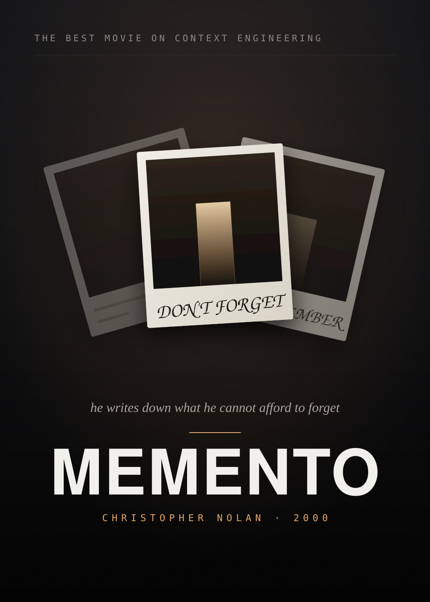

A session ends and takes everything with it. Next week the same repo gets explained again, and the same reasoning derived from scratch.
Today every one of them ends the same way — scroll back and hope.
Copilot ships --continue, --resume, a sessions
tab and /chronicle — the last of those the most useful by
some way. But that is the entire toolkit, and it profiles a bounded
window of recent sessions.
Copilot Sessions (cs)
A terminal browser over the store you already have.
cs search cs read cs resume
cs cost cs stats cs agents
cs audit cs yolo cs handoff
cs skills cs hooks cs mcp
420 sessions · 310 interactive · 5,120 turns · 12 repos v1.0.0 activity ▂▂▁ ▁▃ ▂▂▂▁▂▅▂▁ ▂▂▃▂ ▃▁▂▁ ▂▆▂▄▁ ▁▂▃▃▂▃ ▅▄▃▂▄ 120d ──────────────────────────────────────────────────────────────── FIND ───────────── ▌ 🕒 Recent sessions browse, read and resume · last 7 days ▌ 🔍 Search full text across every turn MEASURE ────────── ▌ 💰 AI spend credits by model, repository and day ▌ 👥 Delegation you vs the main agent vs sub-agents GOVERN ─────────── ▌ 🚀 Autonomy which sessions ran unattended · YOLO REFERENCE ──────── ▌ 🎓 Skills on disk versus actually reached for ↑↓ move · ↵ open · type to find · / search text · q quit
Sessions · last 7 days · interactive · 42 total · sorted by active ↓ # Active↓ Turns Credits Summary ──────────────────────────────────────────────────────────────── Today · Monday 2026-03-09 1 17:03 13 4.2k Migrate CI to Actions #acme/infra 2 17:02 25 7.5k Add checkout validation #acme/webshop 3 16:09 1 735 Fix flaky payment tests #acme/payments 4 15:54 15 788 Write onboarding docs #acme/docs-site 5 13:52 23 2.2k Refactor cart service #acme/webshop Yesterday · Sunday 2026-03-08 6 22:14 8 1.1k Tune search relevance #acme/webshop 7 19:31 23 4.4k Cache warming for feed #acme/api cs show #1 · cs read #1 · cs resume #1▌
$ cs resume #1 session 1a2b3c4d summary Migrate CI to GitHub Actions repo acme/infra · feat/actions-migration turns 13 · last active 17:03 today · 4.2k AIU ▌Still open → wire the deploy job to the staging environment cd ~/src/acme/infra exec copilot --resume 1a2b3c4d ↻ resuming — thirteen turns of context, already loaded▌
Search · 'cache tokens' · 8 sessions · best match first 1 03-08T11:20 24 - Tune search relevance #acme/webshop turn …cache_read + cache_write · cache_write + out… 2 03-05T19:31 23 4.4k Refactor cart service #acme/webshop turn …each `assistant` message carries a `usage` b… 3 03-02T09:47 11 1.9k Add response caching #acme/api turn …the cache hit ratio moved from 31% to 68% af… 4 02-27T14:05 6 910 Trim prompt overhead #acme/infra turn …tokens we never had to send twice, per repo… every turn · both sides · checkpoints · workspace artifacts▌
▌By model spend model share calls avg 117.3k claude-opus-5 ██████████████ 10,906 11.5s 31.1k claude-sonnet-4.6 ████·········· 1,552 5.8s 6.1k gpt-5.5 ▏············· 777 13.0s ▌Per day spend day share calls 46.8k Fri 06 Mar ██████████████ 4,412 28.4k Sat 07 Mar ████████······ 2,610 19.2k Sun 08 Mar █████········· 1,884 ▌By repository 88.4k acme/webshop ████████████·· 6,204 42.9k acme/infra ██████········ 2,140▌
▌How the work was done · last 30 days you ▍················· 20 calls 699 AIU main agent ██████████████████ 949 calls 7.3k AIU sub-agents ▊················· 42 calls 326 AIU compaction ▏················· 6 calls 710 AIU ▌Sub-agents that actually ran runs agent share spend 38 explore ██████████···· 184 AIU 21 code-review █████········· 97 AIU 9 general-purpose ██············ 45 AIU indirect 1.0k AIU · 11% of the bill, no prompt of yours behind it▌
6 YOLO approvals off, on the session's own evidence 18 unattended no evidence either way, but it ran alone 396 supervised prompted often enough to be supervised session last active turns steps per turn summary ──────────────────────────────────────────────────────────────── YOLO 9c0d1e2f 03-04 21:31 2 116 58.0 Bulk-rename… you turned approvals off in the session auto 3a4b5c6d 03-09 16:09 1 98 98.0 Regenerate… 98 steps on one prompt — no check-in between them auto 7e8f9a0b 03-07 11:42 3 141 47.0 Backfill se… supervised sessions are hidden by default · cs yolo --all▌
▌Skills · 11 of 30 ever reached for refs skill share load 64 service-report ██████████████ · 22 ran 41 test-generation █████████····· · 17 ran 28 security-audit ██████········ · 12 ran 12 coverage-analysis ██············ · 8 ran 3 interview ▏············· · 2 ran · release-docs ·············· · none · deck-forge ·············· · none 19 skills sit on disk having never been reached for at all▌